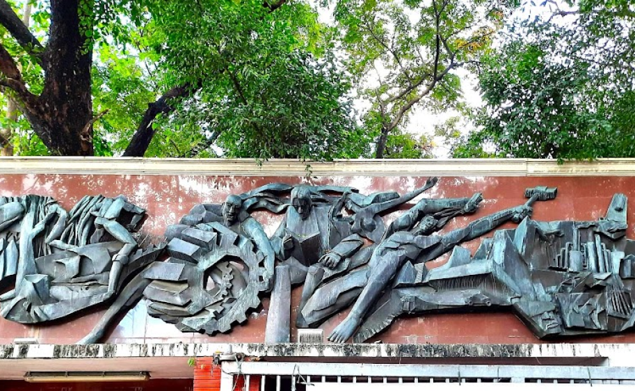
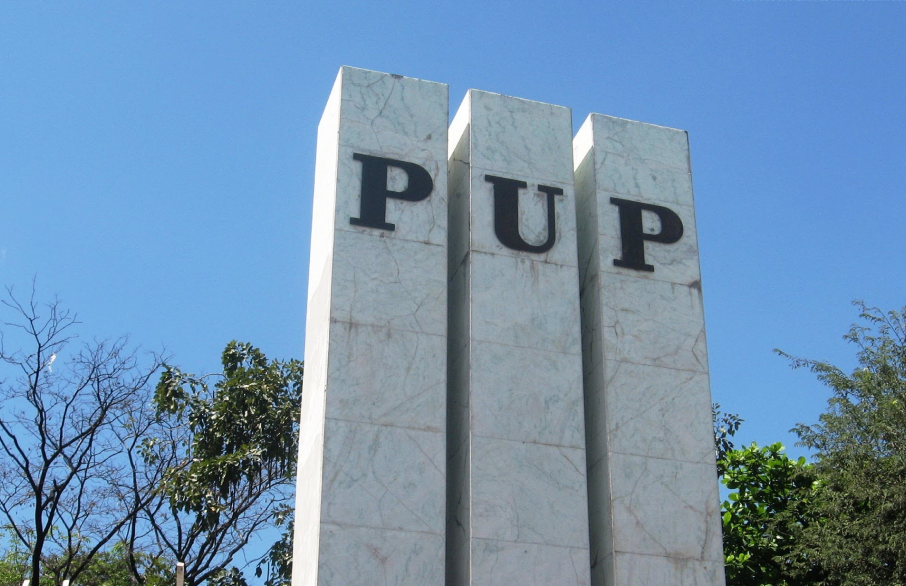
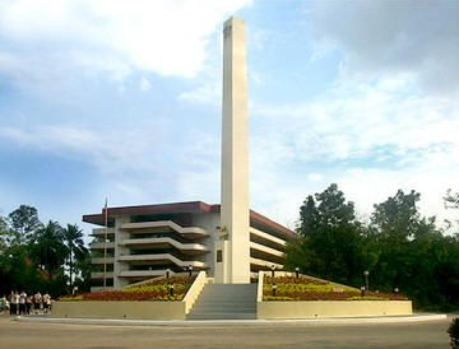
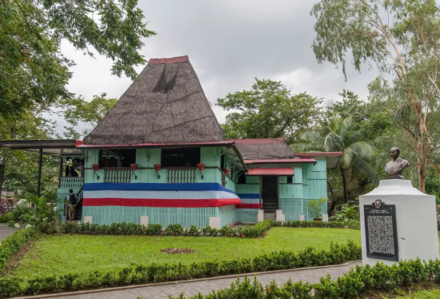
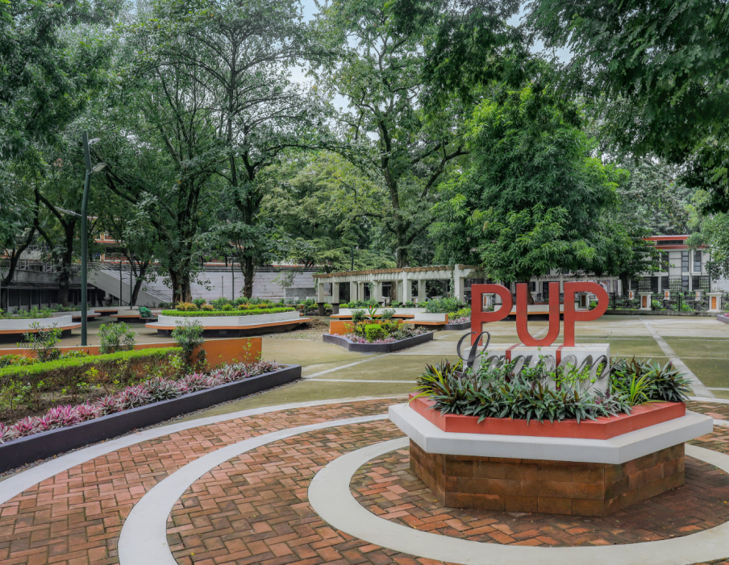
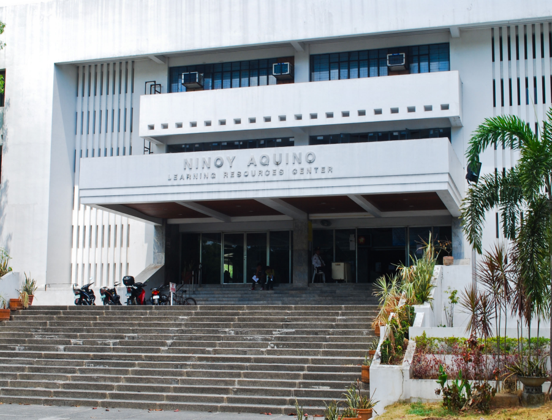
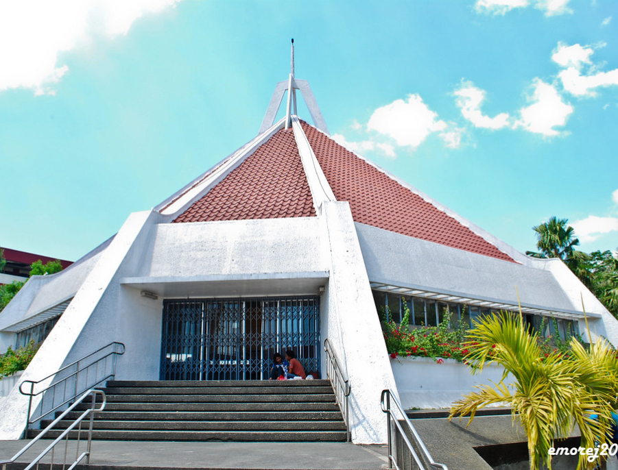

WHAT’S WITHIN THE
PUP MANILA CAMPUS
PUP CAMPUS GUIDE
ABOUT US
The Polytechnic University of the Philippines (PUP) is a government educational institution governed by Republic Act Number 8292 known as the Higher Education Modernization Act of 1997, and its Implementing Rules and Regulations contained in the Commission on Higher Education Memorandum Circular No. 4, series 1997. PUP is one of the country's highly competent educational institutions.
PUP is a public, non-sectarian, non-profit institution of higher learning primarily tasked with harnessing the tremendous human resources potential of the nation by improving the physical, intellectual and material well-being of the individual through higher occupational, technical and professional instruction and training in the applied arts and sciences related to the fields of commerce, business administration, and technology.
Destinations
-

MURAL
The sculpture (Cut and welded brass mural relief, 2.5 x 9.3 meters) was built by national artist Eduardo Castrillo † in 1974. The theme of the artwork is Consolidated Growth through Education - the role of PUP in the educational development of the youth in preparation for their involvement in nation building. The mural illustrates the social, economic, industrial, technological, and cultural aspect of life with which man blends himself to develop an environment necessary to the progress of the nation...
PYLON
The Pylon originally stood for the true, the good and the beautiful. The Triad of pillars may also stand for wisdom, strength and beauty because there should be wisdom to contrive, strength to support and beauty to adorn any great or important undertaking. Since 1987, however, the Pylon came to symbolized truth, excellence and wisdom.
OBELISK
The Obelisk, standing majestic on its base, depicts the strength of the Polytechnic University of the Philippines as an institution of higher learning, promoting educational and moral aims which are fortified by a determined leadership with a clear vision for the Filipino youth and an efficient support system inspired by the virtues of public service.
MABINI
MUSEUMThe Museo ni Apolinario Mabini, located within the Polytechnic University of the Philippines campus, is a historical landmark dedicated to the life and legacy of the renowned Filipino revolutionary. This museum houses personal belongings, documents, and interactive exhibits that showcase Mabini's significant contributions to the Philippine independence movement. Visitors can delve into the rich history of the Philippines and gain insights into the ideals and struggles of one of the nation's most revered heroes. The museum serves as an educational and cultural hub, inspiring future generations to appreciate the sacrifices and achievements of our forefathers.
LAGOON
The PUP lagoon serves as a serene park and open space on the PUP campus. Students can relax, study, or simply unwind in this tranquil environment. The revitalized lagoon is a testament to PUP's commitment to enhancing the campus experience.

AMPHITHEATER
The PUP Amphitheater, located at the A. Mabini Campus, is a popular outdoor venue for various events and activities. It boasts a spacious stage and ample seating, making it ideal for concerts, theatrical performances, and academic gatherings. The amphitheater's open-air design allows for a unique and immersive experience, connecting the audience with the surrounding environment. Its iconic architecture and historical significance make it a beloved landmark within the Polytechnic University of the Philippines.
Ninoy Aquino
Learning
CenterThe heart of the university, the University Library and Learning Resource Center is one of the major service centers of the Polytechnic University of the Philippines. As such, it strives to meet the academic and related needs of its clientele through the provision of adequate and efficient library and information services...
The University Librarry serves as the University's gateway to the global information society, and provides various services and development of programs to its clientele.INTERFAIL
CHAPELThe PUP Interfaith Chapel is a sacred space open to all students and faculty members, regardless of their faith. Located at the A. Mabini Campus , it provides a peaceful environment for prayer, meditation, and reflection. It's a place where individuals can connect with their spirituality and find solace. Additionally, the chapel fosters interfaith dialogue and understanding, promoting respect and tolerance among different religious beliefs.
The Map